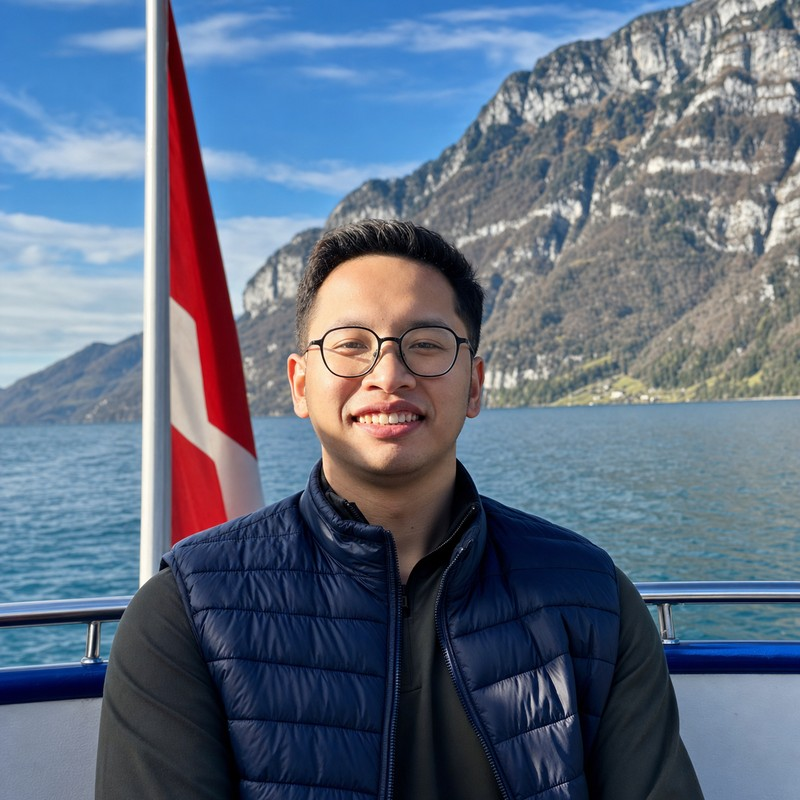
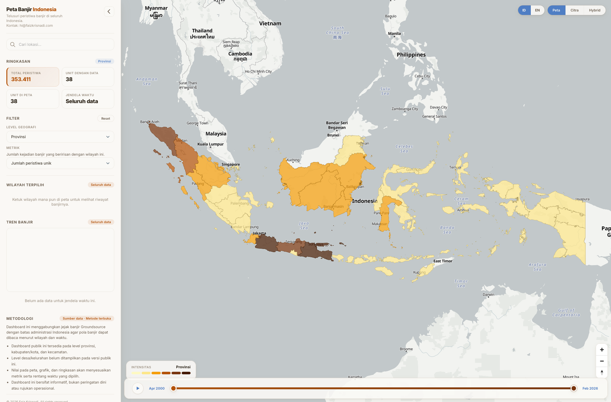
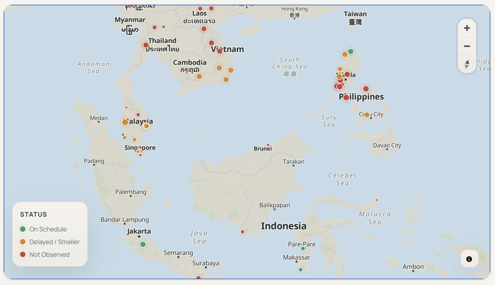
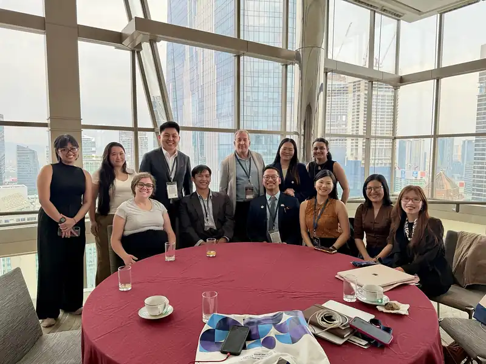

Balancing Risk
and Reward
Who benefits from China’s investments in Indonesia?
A policy report examining the beneficiaries of Chinese development finance and foreign direct investment in Indonesia.
I’m a policy researcher working on investment, sustainability, and political economy in Southeast Asia.

Investment, sustainability, and political economy in Southeast Asia.
Who benefits from China’s investments in Indonesia?
A policy report examining the beneficiaries of Chinese development finance and foreign direct investment in Indonesia.
Explaining When Chinese Development Finance and FDI Blur in Indonesian Elite Narratives
A mixed-method study bringing together project-level data, media framing, and elite interviews.

A district-level view of about 26 years of historical flood records. Built to make long-term patterns easier to explore, whether you work in research, policy, or a community affected by flooding.
Explore the map ↗
A public-facing project following the development of utility-scale renewable energy across Southeast Asia, from announcements toward implementation.
Explore the project ↗Choose programmes and funding options before you apply.
One-to-one support for university and scholarship applications.
Help developing a research question, structure, and argument.
Conversations on scholarships, Southeast Asia, and development.
Practical sessions for students, researchers, and policy teams.
Support turning a policy question into a brief, dataset, or tool.
A Javanese word: to be useful to others
Two sayings have lived rent-free in my head.
I’ve always wanted to be part of work that matters to other people. I also want to do that work well, and see how far I can take it.
That has taken me through community work, research, and policy, often alongside people who have taught me a great deal. I’m proud of what I’ve done so far, grateful for who made it possible, and keen to put what I’ve learned to use in bigger ways.
Before there
was a plan
I was a natural science student in high school, but much of my time outside class went into organisations, volunteering, and youth programmes.
Through Mubaligh Hijrah, I spent time in two rural communities, one in Central Java and another in Kulon Progo. We worked with local leaders on activities for residents. Through bakti sosial and similar initiatives, we also collected money and other resources for people who needed them.
None of this felt like a career plan at the time. I simply liked being involved, trying things that had not been done before, and taking responsibility when something needed to get done.
Learning to build
with others
At Universitas Muhammadiyah Yogyakarta, I moved between student government, research, external relations, communications, teaching support, and event organising. During the pandemic, I founded Ruang Virtual and worked on its partnerships, content, and communications.
I enjoyed the work behind an event as much as the event itself: contacting people, finding the right partners, and making sure the whole thing actually happened. Years later, I was still doing versions of that work through Coffee Chat on Energy Transition and NariTalk: Policy for Sustainable Development.
A wider world
My studies eventually took me from Indonesia to Taiwan, the United Kingdom, Singapore, and Switzerland. The route to postgraduate study involved many applications and plenty of rejection. I chose the Low Tuck Kwong Foundation Scholarship to pursue my master’s at NUS.
I also joined Pacific Forum’s Young Leaders delegation to the Asia-Pacific Roundtable in Kuala Lumpur.

Through AidData, NUS, my master’s thesis, and independent projects, I became increasingly interested in how investment, institutions, and public narratives shape who benefits from economic change.
I had spent years helping organise and join discussions. I was now contributing more of my own ideas to them.
Some of the work I care about most is made for people who may never read an academic paper. The format changes depending on the problem, but the question is usually similar:
Once we understand something better, how can we make that knowledge useful to someone else?
Some attempts at an answer →I’m a policy researcher working on investment, development, sustainability, and political economy in Southeast Asia.
I use research, data, and public-facing tools to understand how economic change affects people, institutions, and places.
I hold a Master’s in International Affairs from the Lee Kuan Yew School of Public Policy at the National University of Singapore, where I was a Low Tuck Kwong Foundation scholar. During my master’s, I spent a semester as a guest student at the University of St. Gallen.
I recently completed a Research Assistant appointment at the NUS Civic Resilience Laboratory, working on urban sustainability and AI applications in climate resilience. I also co-authored AidData’s Balancing Risk and Reward.
Before that, I studied International Relations at Universitas Muhammadiyah Yogyakarta, with study experiences at Asia University in Taiwan and the University of Glasgow in the UK.
View CV →Published Indonesia needs predictable rules to keep Chinese capital in East Asia Forum.
Presented on global economic systems and poverty at Sakola Kita’s Online Diplomacy Training.
Received the NUS Achievement Award.
Started Building Future-Ready Sustainable Finance Capabilities at Singapore Management University, fully funded under the ASEAN-UK Green Transition Fund.
Selected coverage
Leave a note
Drop me a line—about work, an idea, or just to say hello.
hi@faizkrisnadi.comPublished Indonesia needs predictable rules to keep Chinese capital in East Asia Forum.
Presented on global economic systems and poverty at Sakola Kita’s Online Diplomacy Training.
Received the NUS Achievement Award.
Started Building Future-Ready Sustainable Finance Capabilities at Singapore Management University, fully funded under the ASEAN-UK Green Transition Fund.
Featured by NUS Giving in Inspired for Regional Impact.
Graduated from NUS with a Master in International Affairs from the Lee Kuan Yew School of Public Policy.
Selected for Pacific Forum’s Young Leaders delegation to the 39th Asia-Pacific Roundtable, convened by ISIS Malaysia.
Participated in the Asia New Zealand Foundation’s NextGen Masterclass on Track II diplomacy.
Presented at the 5th Annual Green Trade Lab Workshop at the University of Basel.
Placed second in the Global Essay Competition at the 55th St. Gallen Symposium.
Joined the NUS Civic Resilience Laboratory as a Research Assistant.
Launched Peta Banjir Indonesia, a public map for exploring historical flood records.
Selected as a Leader of Tomorrow at the St. Gallen Symposium.
Placed third in LKYSPP’s Bridging GAP op-ed competition with Singapore’s Care Paradox.
Organised NariTalk: Policy for Sustainable Development.
Worked as a Teaching Assistant for Behavioural Economics and Public Policy and Introduction to Coding for Public Policy Using Python at LKYSPP.
Presented at the Conference on Innovation and Integration for Development in Singapore.
Attended the Conference on Trade and Services at WTO headquarters in Geneva.
Selected as a Global Leadership Challenge Fellow by the University of Oxford and St. Gallen Symposium.
Completed Problem Solving certification at the Swiss Armed Forces Leadership Camp.
Studied at the University of St. Gallen as a guest student.
Joined the Pacific Forum Young Leaders Program.
Joined AidData as a Research Assistant.
Organised Coffee Chat on Energy Transition.
Began the Master in International Affairs at the Lee Kuan Yew School of Public Policy.
Awarded the Low Tuck Kwong Foundation Scholarship for the Master in International Affairs at LKYSPP.